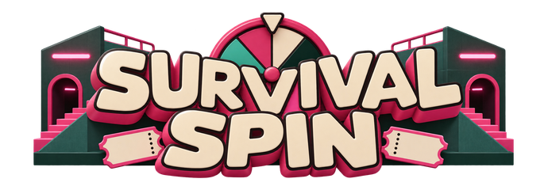
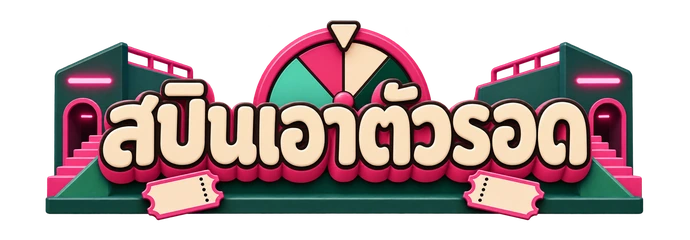
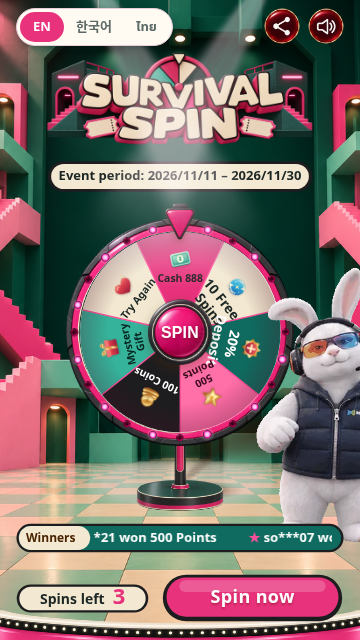
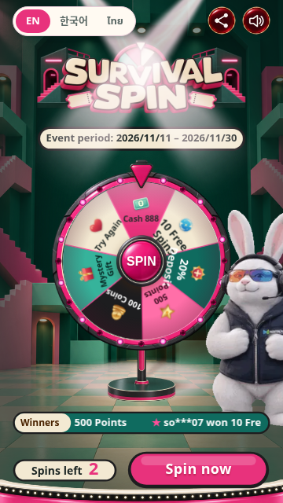
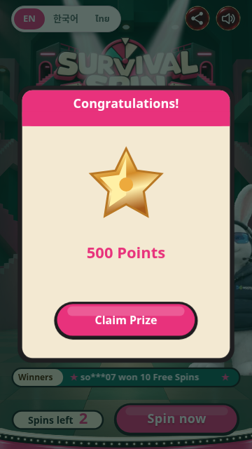
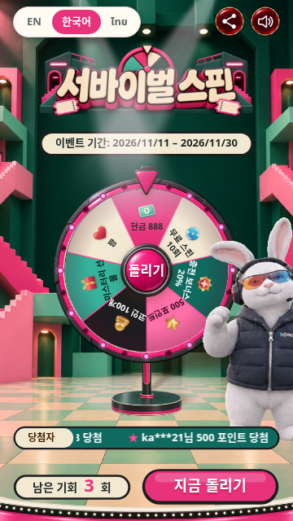
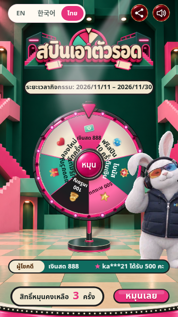

Original survival-game-show setting: pink stair labyrinth, deep-green hall and cream/mint floor.
P0 submission only. UI panels, icons and staff-outfit mascot remain pending. The vest mascot is temporary.
Play the new skin · Game checks · Asset checks






